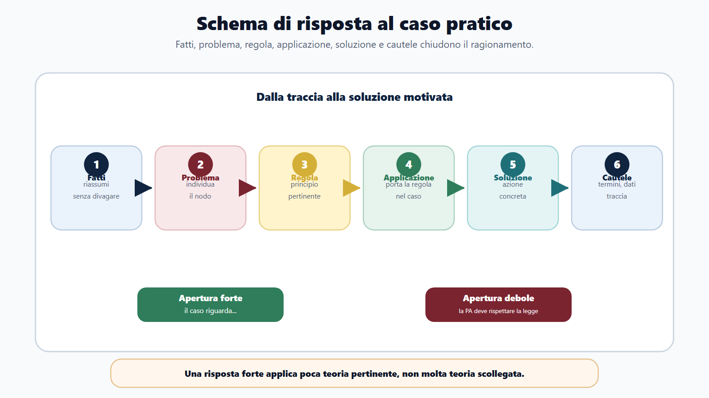
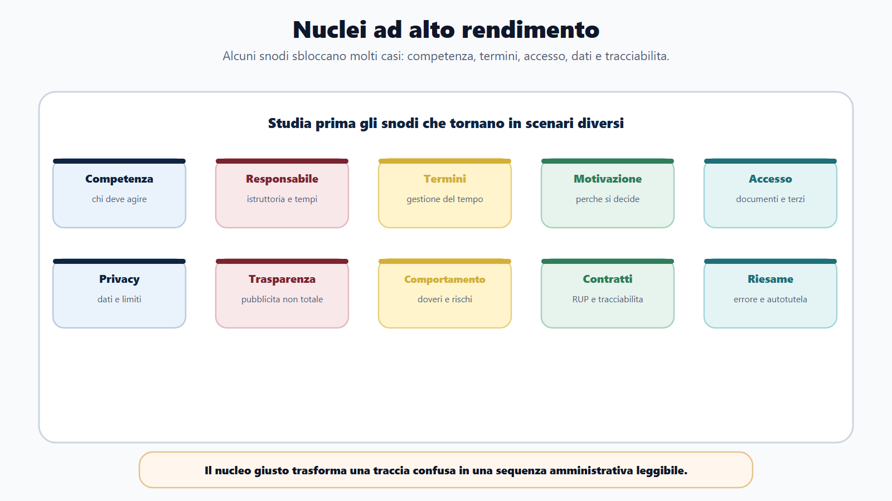
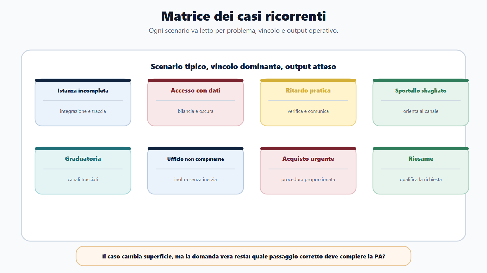
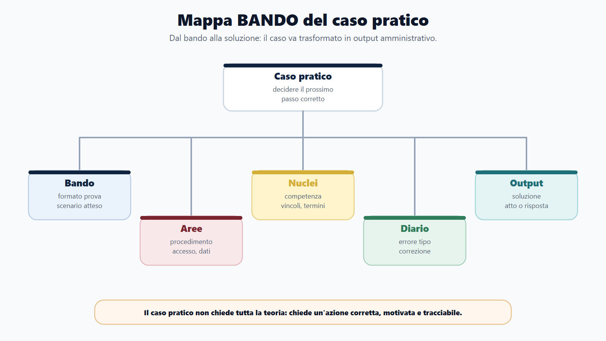
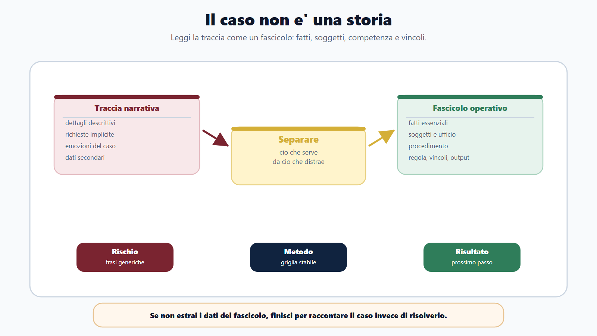
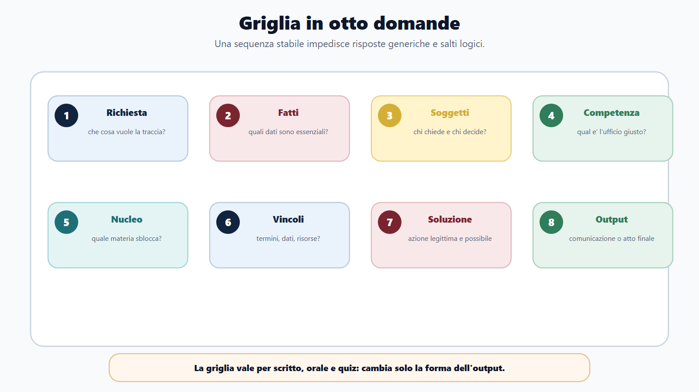

VOL-01 · Capitolo 17
Parte III · Allenarsi come in prova
Casi pratici e problem
solving amministrativo
Nel caso pratico il concorso chiede che cosa faresti, non solo che cosa sai. Non vince chi scrive più teoria. Vince chi ragiona come un funzionario pubblico: regola, procedimento, competenza, interesse pubblico, utente.
Schema
Schema risposta caso pratico

Schema
Nuclei alto rendimento

Schema
Matrice casi ricorrenti

Schema
Mappa bando caso pratico

Schema
Caso come fascicolo amministrativo

Schema
Griglia otto domande

01 · Perché seleziona
Il caso misura il prossimo passo corretto
Uno studio tradizionale prepara a ripetere argomenti, non a usarli. Puoi conoscere procedimento, accesso, privacy e contratti e bloccarti davanti a una domanda incompleta, a una richiesta all’ufficio sbagliato, a documenti con dati di terzi, a una pratica in ritardo o al sollecito di un operatore economico.
Che cos’è
Un fascicolo amministrativo ridotto, non una storia. Contiene fatti utili e dettagli che distraggono. Il primo lavoro è separare ciò che serve da ciò che distrae, poi decidere il comportamento dell’amministrazione.
Cinque dimensioni insieme
La regola, perché la PA non agisce a intuito. Il procedimento, perché ogni decisione ha passaggi. La competenza, perché non tutti possono fare tutto. L’interesse pubblico, perché non è un favore. L’utente, perché si comunica in modo chiaro e responsabile.
«L’amministrazione deve provvedere», «bisogna rispettare la legge», «occorre tutelare il cittadino». Sono vere, ma non chiudono il caso. Devi dire chi agisce, come, con quali vincoli e con quale output.
02 · BANDO
Stesso ragionamento, tre forme di output
Il caso può uscire come scritto, orale, quiz, risposta sintetica, atto o scenario. Cambia la forma, non la scomposizione. Nel quiz riconosci l’opzione coerente; nello scritto argomenti; all’orale mostri il ragionamento.
| Domanda guida | Prodotto | Se la salti | |
|---|---|---|---|
| B — Bando | Che tipo di caso può uscire? | Scheda formato caso. | Alleni un tema quando serve un atto, o un atto quando serve un quiz. |
| A — Aree | Quali materie convergono? Procedimento, accesso, privacy, impiego, contratti? | Mappa aree coinvolte. | Rispondi con un solo capitolo del manuale. |
| N — Nuclei | Competenza, termini, motivazione, accesso, dati, responsabilità. | Lista ad alto rendimento. | Tratti ogni traccia come un mondo nuovo. |
| D — Diario | Fatti, regola, competenza, ordine, privacy, tempo? | Registro casi ed errori. | Ripeti lo stesso passaggio sbagliato. |
| O — Output | So scrivere, spiegare a voce, scegliere l’opzione? | Risposte, mini-casi, simulazioni. | Resti sulla teoria travestita da domanda. |
Nel caso pratico non devi dimostrare che hai studiato tutto. Devi dimostrare che sai decidere il prossimo passo corretto.
Ragionare come un funzionario significa tenere insieme regola, procedimento, competenza, interesse pubblico e utente. Se manca una di queste dimensioni, la risposta resta un capitolo del manuale travestito da domanda.
03 · Griglia
Otto domande, ogni volta
Questa griglia vale per scritto, orale e quiz. Se non la compili mentalmente, rischi risposte generiche. L’ufficio che riceve non è sempre quello che decide.
| # | Domanda | A che serve |
|---|---|---|
| 1–2 | Che cosa chiede la traccia? Quali sono i fatti essenziali? | Elimina dettagli emotivi o narrativi. Capisci se serve soluzione, sequenza, atto o valutazione. |
| 3–4 | Chi sono i soggetti? Chi è competente? | Cittadino, ufficio, responsabile, dirigente, controinteressato, operatore economico. |
| 5–6 | Quale nucleo è coinvolto? Quali vincoli limitano? | Accesso, istanza, silenzio, graduatoria, acquisto, dati, riesame. Termini, motivazione, privacy, trasparenza, risorse. |
| 7–8 | Qual è la soluzione corretta? Quale output finale? | Possibile, legittima, proporzionata. Comunicazione, integrazione, provvedimento, inoltro, segnalazione, istruttoria. |
04 · Schema di risposta
Fatti, problema, regola, applicazione, soluzione, cautele
Apertura efficace: «Il caso riguarda una istanza incompleta presentata a un ufficio comunale. Il problema non è respingere automaticamente la domanda, ma verificare se l’incompletezza impedisce l’istruttoria e quali integrazioni siano necessarie.»
Fatti
Due o tre righe. Solo ciò che è accaduto e ciò che manca.
Problema
La questione amministrativa, non il titolo del capitolo.
Regola
Quadro essenziale, senza divagare. Niente articoli incerti.
Soluzione
Comportamento concreto, poi termini, dati, tracciabilità, competenza.
05 · Nuclei
Quelli che sbloccano più casi
Studiali prima. Tornano in tracce diverse: dal cittadino allo sportello all’acquisto urgente, dal ritardo al riesame. Non sono «tutto il programma»: sono i concetti che, se saldi, fanno partire la soluzione.
| Nucleo | Perché rende in prova |
|---|---|
| Competenza e responsabile | Chi deve agire, chi no; istruttoria, comunicazioni, tempi, decisione. |
| Termini e motivazione | Il caso diventa gestione del tempo e ragioni della decisione. |
| Accesso, privacy, trasparenza | Documenti, controinteressati, dati; distinzione tra pubblicazione, civico e documentale. |
| Codice di comportamento | Regali, pressioni, dati, conflitti di interessi, astensione. |
| Contratti e autotutela | Acquisti, RUP, tracciabilità, rotazione; riesame quando si chiede di rivedere un atto. |
06 · Casi 1–4
Istanza, accesso, ritardo, sportello
Quattro tracce ricorrenti. In tutte la soluzione è legittima, proporzionata, motivata e tracciabile. In nessuna vince la scorciatoia informale.
| Caso | Soluzione corretta | Errore da evitare |
|---|---|---|
| Istanza incompleta | Individuare il documento mancante; se essenziale, comunicare integrazione, termini e modalità; tracciare; esito motivato se non si sana. | «La domanda è incompleta, quindi va respinta» senza verificare l’integrazione. |
| Accesso con dati di terzi | Qualificare l’accesso; documenti; posizione del richiedente; controinteressati; oscuramenti o limitazioni; decisione motivata. | Trasparenza come diffusione totale, oppure diniego automatico. |
| Ritardo | Stato pratica, causa, comunicazione non evasiva, riattivazione, coordinamento tra uffici, tracciabilità. | «Deve aspettare». Il cittadino ha diritto a una gestione comprensibile, non sempre all’esito favorevole. |
| Sportello sbagliato | Riconoscere il limite di competenza e orientare verso l’ufficio e il canale corretti, senza promettere esiti o accedere a dati senza ragione di servizio. | Confondere disponibilità con invasione di competenza, o liquidare l’utente. |
07 · Casi 5–8
Graduatoria, inoltro, acquisto, riesame
Qui i vincoli ricorrenti sono imparzialità, tracciabilità, privacy e formalizzazione. «Piccolo valore» non significa assenza di regole. Ascolto non significa esito favorevole.
| Caso | Soluzione corretta | Errore da evitare |
|---|---|---|
| Contestazione informale di graduatoria | Niente controlli non tracciati su dati di altri candidati. Indicare canali per chiarimenti, accesso o riesame. | «Per trasparenza gli faccio vedere tutto». |
| Pratica all’ufficio sbagliato | Verificare competenza, inoltrare secondo regole interne, informare il cittadino. Continuità del procedimento, non inerzia. | «Non è affare mio». Il limite di competenza non autorizza il disinteresse. |
| Acquisto urgente, fornitore conosciuto | Fabbisogno, valore, competenza, risorse, procedura proporzionata, formalizzazione e tracciabilità. Coinvolgere il responsabile competente. | Iniziare prima di qualsiasi formalizzazione «per fare prima». |
| Richiesta di riesame | Qualificare: chiarimento, accesso, riesame, autotutela, ricorso. Gestire in modo ordinato. Nessun obbligo generale di modificare l’atto solo perché non è condiviso. | Promettere la modifica prima dell’istruttoria. |
08 · Casi 9–10
Conflitto di interessi e documento non valutato
Due trappole sottili. Nel primo, l’imparzialità dichiarata dal dipendente non basta. Nel secondo, un documento tempestivo ma classificato male non si sistema con una scusa né si ignora perché l’atto è già adottato.
Familiare nell’istruttoria
Segnalare tempestivamente al responsabile competente, astenersi dalle attività che incidono sulla pratica, riassegnazione tracciata se disposta. La relazione familiare non è automaticamente un illecito, ma impone di prevenire il rischio reale o apparente di parzialità. Errore: «sono imparziale, quindi procedo».
Documento protocollato, non valutato
Acquisirlo nel fascicolo corretto, verificare se avrebbe potuto incidere, attivare il percorso di riesame, comunicare all’interessato, motivare ogni passaggio, correggere la causa organizzativa. La presenza del documento non impone un esito favorevole: impone una nuova valutazione corretta e tracciata.
09 · Segnali
Risposta forte e risposta debole
Lo stesso caso cambia forma. Nel quiz riconosci rapidamente l’opzione che rispetta competenza, procedura e vincoli. Nello scritto argomenti. All’orale: «partirei dai fatti, qualificherei la richiesta, verificherei competenza e poi…».
Una risposta forte
Parte dai fatti, individua l’ufficio competente, richiama solo principi pertinenti, distingue diritto dell’utente e limiti dell’amministrazione, considera privacy, trasparenza e tracciabilità, propone un’azione concreta, spiega perché è corretta, non promette ciò che non dipende dal funzionario.
Una risposta debole
Resta generica, cita norme a caso, dimentica soggetti e competenza, scrive «la PA deve provvedere» senza dire come, confonde cortesia con deroga, ignora dati personali e controinteressati, non chiude con un output.
«Caso sbagliato» non è una diagnosi. Classifica: fatti, problema, competenza, regola, applicazione, privacy/trasparenza, output, tempo. Se sbagli spesso la competenza, allena organi e responsabili. Se scrivi troppa teoria, limiti di 12–15 righe.
10 · Mini-simulazione
Tre casi, massimo dodici righe ciascuno
Non a mente. Se superi le dodici righe, stai ancora facendo teoria. La traccia di correzione è già il metodo: identificazione e canali, integrazione tracciata, procedura proporzionata.
| Caso | Output richiesto | Traccia di correzione |
|---|---|---|
| Informazioni telefoniche su pratica di un familiare | Comportamento corretto e cautele. | Identificazione, riservatezza, canali corretti, nessuna diffusione impropria. |
| Domanda priva di un allegato essenziale | Sequenza operativa. | Verifica, richiesta di integrazione, tracciabilità, termine, esito motivato. |
| Collega propone fornitore «di fiducia» senza passaggi formali | Rischi e soluzione. | Fabbisogno, competenza, procedura proporzionata, formalizzazione, tracciabilità. |
11 · Verifica
Due domande da saper spiegare
Come si affronta un caso pratico amministrativo?
Si parte dai fatti rilevanti, si individua il problema amministrativo, si chiariscono soggetti e competenza, si richiama il principio o la regola applicabile, si valuta l’interesse pubblico e si propone una soluzione concreta, motivata e tracciabile. La risposta non deve essere un riassunto teorico, ma applicazione ordinata della teoria al caso.
Se il cittadino ha ragione sul piano sostanziale, si possono saltare alcuni passaggi?
No. L’amministrazione deve essere utile e orientata al servizio, ma non può sostituire la procedura con scorciatoie informali. La soluzione corretta è accelerare ciò che è legittimamente accelerabile, chiarire i passaggi, evitare ritardi inutili e rispettare competenza, tracciabilità e imparzialità.
12 · Da tenere ferme
Cinque regole, con il perché
1. Il caso pratico misura applicazione, non memoria libera, perché la commissione valuta il prossimo passo corretto, non il capitolo ricordato.
2. La traccia va scomposta in fatti, soggetti, competenza, regola, vincoli e output, perché i dettagli narrativi distraggono e le formule generiche non chiudono.
3. La soluzione deve essere legittima, proporzionata, motivata e tracciabile, perché la PA non agisce a intuito né per favore personale.
4. Privacy, trasparenza, accesso, termini e responsabilità sono vincoli ricorrenti, perché saltarli produce risposte «buone» ma scorrette.
5. Il diario deve classificare gli errori per correggere il modo di ragionare, perché «caso sbagliato» non dice quale passaggio ripetere.
Prossimo capitolo
Quesiti situazionali e soft skills
Stesso formato a opzioni, altri distrattori: vince il comportamento pubblico, non il buon senso generico né la risposta più gentile.